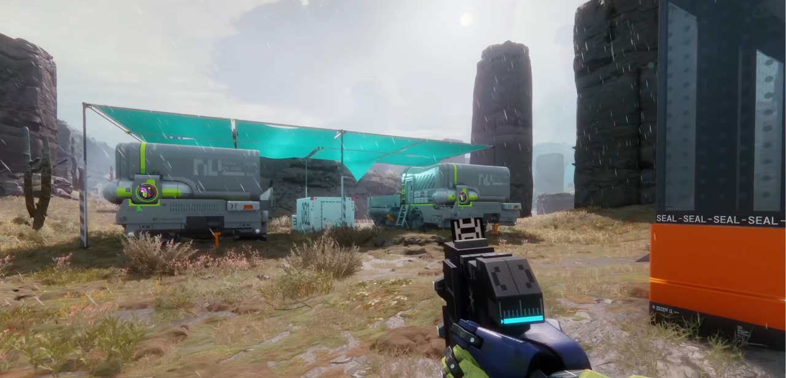
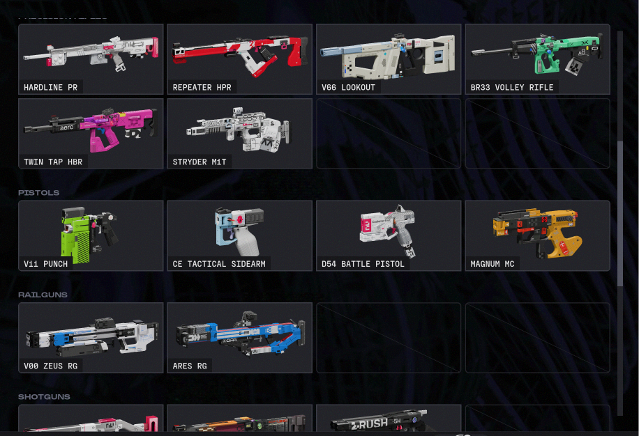

GRAPHIC REALISM // VISUAL REFERENCE
Phân tích triết lý thị giác cốt lõi của Marathon: sự đối lập có chủ đích giữa các cấu trúc nhân tạo mang hình khối cơ bản, màu sắc Neon rực rỡ với thiên nhiên chân thực và thế giới hậu tận thế khoa học viễn tưởng.
Marathon sử dụng phong cách đồ họa 3D low poly cùng palette màu neon chói rực cho những thành phần nhân tạo như kiến trúc, vũ khí, vật phẩm… đồng thời dùng đồ họa chân thực cho những thành phần thuộc về thiên nhiên và hữu cơ như đất đá, rong rêu, cây cối…. Điều này tạo ra một nghịch lý về thị giác, tăng tính tương phản giúp điều hướng góc nhìn của người chơi chú ý đến những điểm nóng trong bản đồ một cách tự nhiên.
Sự kết hợp giữa khoa học viễn tưởng, công nghệ tương lai và dấu vết đổ nát tạo cảm giác vừa hiện đại nhưng cũng đậm chất hậu tận thế. Phong cách hình ảnh này đã tạo nên bản sắc riêng cho game.
Áp dụng cho kiến trúc, vũ khí, vật phẩm với khối kỷ hà sắc nét và màu Neon chói rực nổi bật trên nền tối.
Áp dụng cho đất đá, rong rêu, cây cối và dấu vết đổ nát, tạo chiều sâu sinh học chân thực cho hành tinh Tau Ceti IV.
Nghịch lý thị giác tạo độ tương phản cực đại, tự động dẫn dắt mắt người chơi tập trung vào các điểm nóng (hotspots) và vật phẩm.


Những vũ khí được trừu tượng hóa bằng những hình học cơ bản như khối vuông, hình lăng trụ… nhưng vẫn giữ được những nét quen thuộc riêng chỉ vừa đủ để người chơi có thể phân biệt thuộc tính. Có thể thấy như Twin Tap HBR được lấy cảm hứng từ M16 hay Magnum MC được lấy cảm hứng từ Magnum 44 ngoài đời thực. Những khẩu súng cũng sử dụng những màu sắc rực rỡ, nổi bật, gần như đối lập với ví dụ ngoài đời thực. Cách làm này khiến người chơi một cảm giác hoài niệm, vừa quen thuộc vừa lạ lẫm.
Giữ lại tỷ lệ thân súng trường tấn công và cụm tay xách/ống ngắm quen thuộc của M16, nhưng toàn bộ ốp lót tay và thân súng được gọt phẳng thành các khối lăng trụ vuông vức phối màu sơn công nghiệp nổi bật.
Kế thừa phom dáng nòng dài uy lực của súng lục Magnum .44 cổ điển, tái cấu trúc bằng khối hộp kim loại góc cạnh và màu sắc tương phản cao, mang lại cảm giác vừa hoài cổ vừa đậm chất tương lai.
Các nhân vật, cũng như vũ khí và kiến trúc nhân tạo trong game, sử dụng phong cách thiết kế 3D low poly khái quát hóa nhiều chi tiết trên cơ thể thành những hình khối cơ bản (khối hộp, khối lăng trụ,...). Bề mặt cơ thể chất liệu nhựa sáng bóng tạo cảm giác nhân tạo. Tuy nhiên những nhân vật này vẫn có những đặc điểm có thể nhận dạng là con người như khuôn mặt, chân, tay chân thực.
Nhân vật được thiết kế cùng với gam màu tươi sáng như mô hình đồ chơi nhưng lại chuyển động giống con người. Điều này khiến nhân vật trở nên vô hồn, máy móc, đóng góp vào bối cảnh của thế giới game tương lai khoa học tiên tiến khi con người phải sống trong vỏ bọc của robot. Từ đó, người chơi không chỉ được tự do khai phá các chức năng mới lạ trong các nhân dạng, đồng thời trải nghiệm cảm giác bom tấn. Bên cạnh đấy, lối thiết kế này cũng kể một câu chuyện về sự phát triển vượt bậc của công nghệ và sự đánh mất nhân tính của con người.
Cơ thể được khái quát hóa thành khối hộp, khối lăng trụ với lớp vỏ nhựa sáng bóng nhân tạo, đan xen các nét giải phẫu người chân thực ở gương mặt và tứ chi.
Khoác gam màu tươi sáng như mô hình đồ chơi (Action Figure) nhưng mang chuyển động sinh học của con người, tạo cảm giác lạnh lùng, vô hồn và máy móc.
Phản ánh trực tiếp bi kịch cốt truyện: khi công nghệ phát triển vượt bậc, ý thức con người bị đóng khung trong vỏ bọc robot, dần đánh mất bản원 nhân tính.
Xem phân tích chi tiết cho Vandal, Recon, Triage, Assassin, Thief, Sentinel và Destroyer.
Bảng màu High-Contrast Acid & Hệ thống 5 Font chữ.
Thiết kế cảnh quan hành tinh và hệ sinh thái ngoại lai.
Kiến trúc công nghiệp Sci-Fi và tương quan tự nhiên.
Kể chuyện qua hiện trường và dấu tích môi trường.
Kho 28 vũ khí mô-đun và thông số chi tiết.